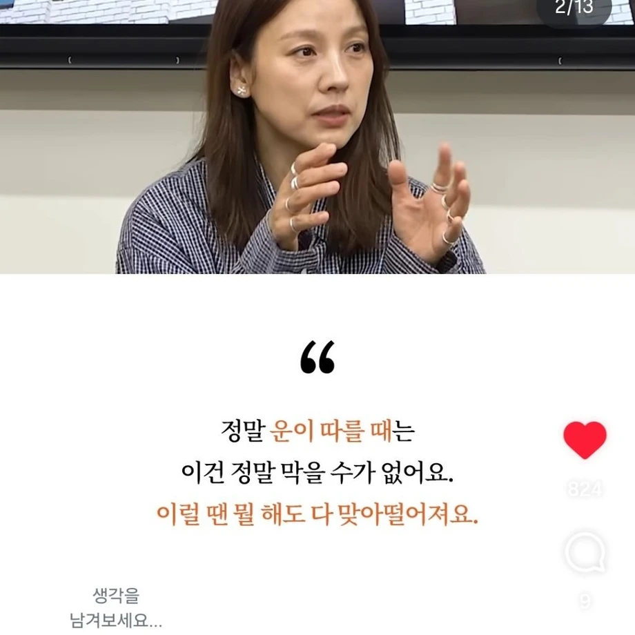
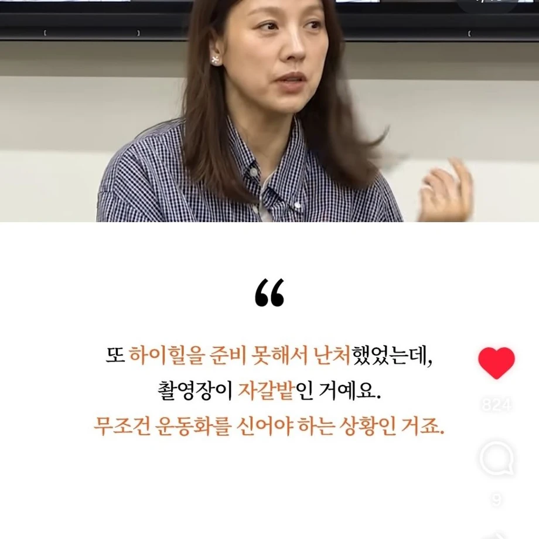
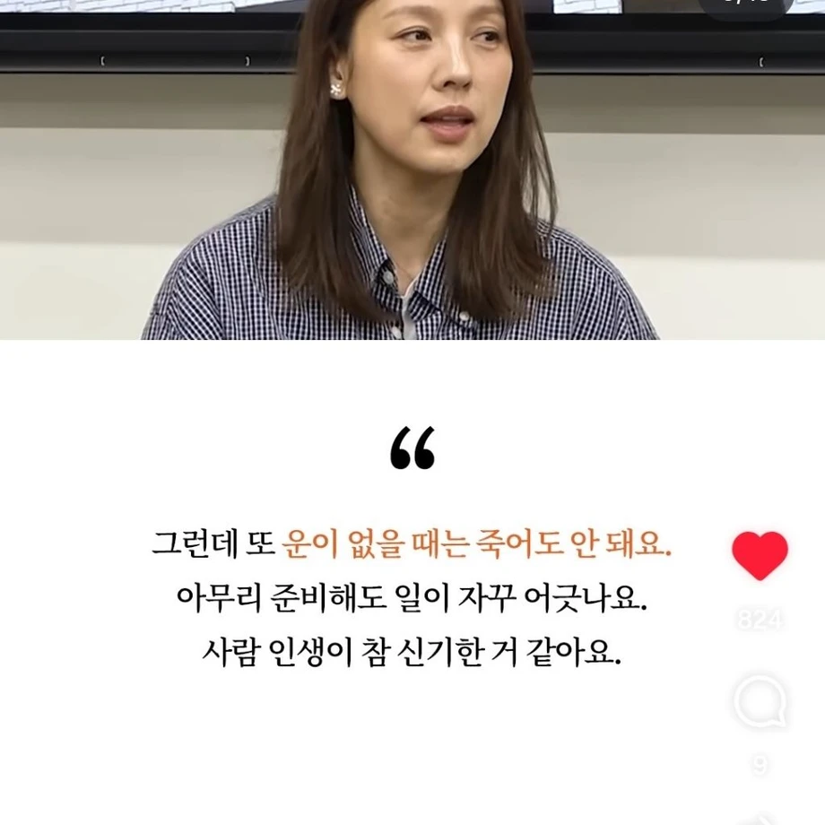
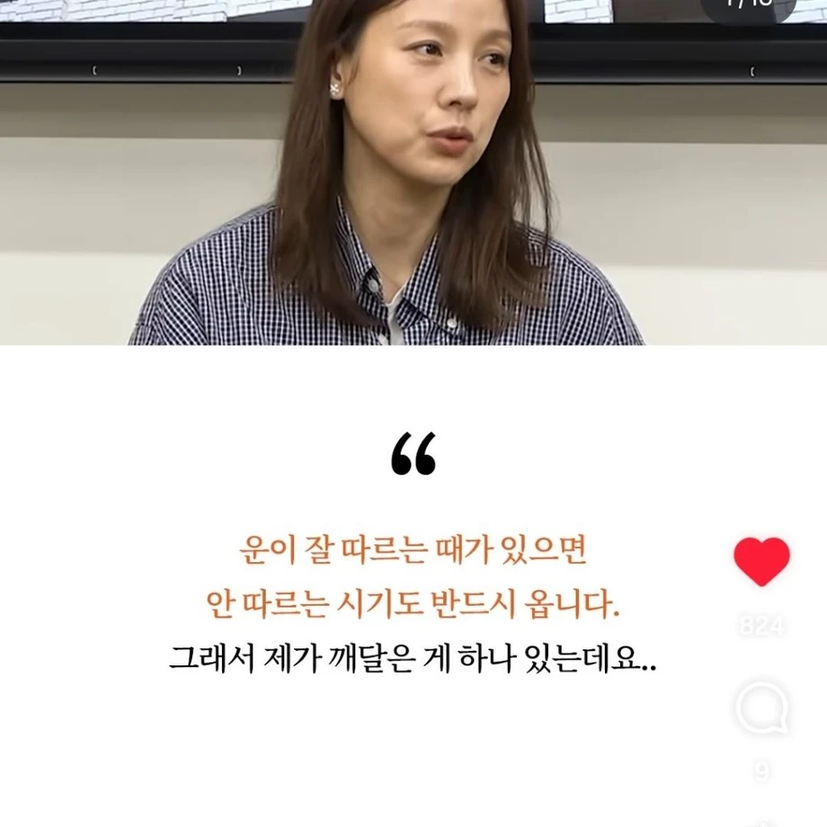
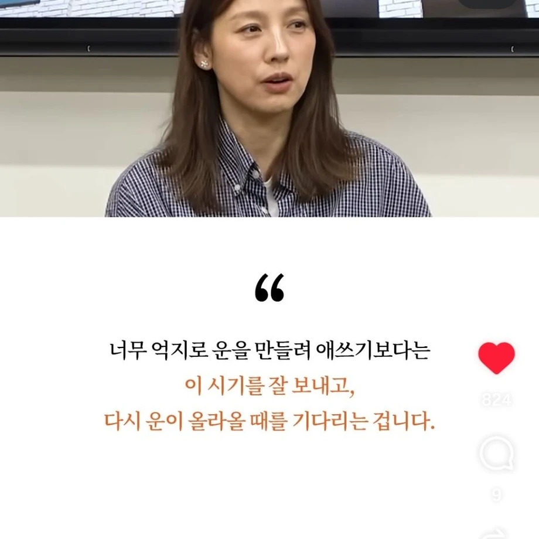

100년뒤
죽고 부활
지지리도 운없던 내가 LUK +9999로 전생한 건에 관하여
저거는 성공한 사람 기준이라
님은 운이 아예 없을수도 있습니다
그 생존자....? 성공자...편향 그런거?
아무래도
일반인과 타고난 외모와 재능이 남다르니
나도 타고난 외모가 남다르고 재능은 손에 꼽을 정도임 방향이 다를 뿐 ㅠ
극과 극은 통하는 법!
죽기 하루전?
이번 생은 운이 없었어...
아는형이 삼재는 x같이 재수없는거고 삼재아닐때는 그냥 재수없는거라고
대운 바뀌는게 보통 10년주기임
이제 좀 지나고 생각하면 아 그땐 운이 좋은 편이었구나 하게 되더라....
운이 좋을때는 운이 안좋을때를 대비해야겠구나
역시 팀운이 없었던거야 (롤 브론즈 7년차)
아 그래서 내가 삼전30에 물린거구나
언제오나...
사람 인생,운명이란게 각자 타고나는게 있어서 불공평한거라고함
이효리는 데뷔때부터 무명 없이 그냥 쭉 잘되왔던 소위말해 타고난 좋은 팔자라서 그런걸꺼고
타고난 팔자가 안좋으면 평생 쭉 안좋게 지내거나 평범하게 살다가 가는거지 뭐 ㅋㅋㅋ
ㄹㅇ... 뭐 죽어라 노력하라는데 뭔가 빵 터질 직업이라도 하는 거면 노오력하겠어
가만히 있으면 안됨. 고통스럽고 힘들어야되더라고
평생동안 운이 따르지 않는 사람들도 있기 때문에 복지가 존재한다더라
역시 내가 못하는게 아니고 팀운이 없어서 아이언4인거구나!!
그래서 주식 언제 오름?
모두에게 운은 찾아옴
대부분은 찾아왔는지도 모르고 지나가 버리지.
잡을 준비가 안 된거임
당장 올해 상승장도 모두에게 공평하게 찾아옴
19년, 20-21년, 23년 이후 상승장 모두 마찬가지
이새끼 물렸네
갈!
존나 웃기네ㅋㅋㅋㅋㄱㅋ
그 기회를 잡을 수 있는 상태 자체가 이미 커다란 운임 그 기회를 알아채는 환경도 운이고 실패를 감당할 수 있는 환경도 다 운임 남들은 10번 도전할 수 있는데 단 한 번만 틀려도 인생 망하는 사람은 그 기회를 잡기 어렵잖아 ?
그렇게 치면 한국에 태어난 것부터가 대운이지
너 말대로 가면 끝도 없음 그럼 지구에서 태어난 것도 대운이고 우리 지구가 태양계 골디락스 존에 있는 것도 대운이지 내 말은 한국 안에서도 누구는 금수저로 태어나고 누군 중산층 누군 가난한데 몸까지 불편하게 태어남 이 출발선 자체가 운이라는 거임
내 롤 팀운은 언제 찾아오는거죠
맞음 KFC 할아버지도 일흔 넘어서 성공했다.
그러니까 우리도 성공 운 때가 남보다 좀 늦어서 130살, 142살에 오는 건데
수명이 거기까지 못 가서 불운하게 죽는 것뿐임. 씨발아.
평생 안되는 수도 있기는 하지ㅋㅋㅋ
30살 지금 운이 없을 때구나…
40살 지금 운이 없을 때구나……
.
.
.
500살 지금 운이 없을 때구나………
얼마나 운이 없으면 500살까지 살앗...
이뻐야함
평범한 직장인 기준 40 넘어도 안오면 그냥 이렇게 살라는거임
이게 맞다
내가 낸 수업료가 헛된 것일 리가 없잖아?
일희일비 하지말자
아, 이번 생은 운이 없는 생이구나~
파도야~파도~
삐익- 상장폐지입니다
"지금은 운이 없을 때구나." 라고 생각하고 기다린게 10년째인데 언제 올라가는거